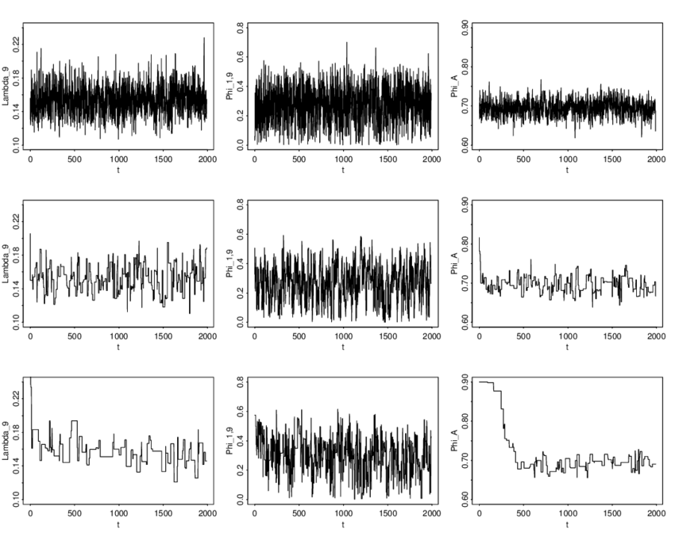

10 Computational Optimization
Welcome to the last chapter of the course notes! There are no worked examples or concept questions for this chapter, which is instead focused on practical implementation of a handful of useful algorithms, and useful computational techniques that you may come across in your future, statistical career. Go forth and compute!
10.1 Newton-Raphson
Recall from the second chapter of the course notes the typical procedure for finding an MLE:
Find the log likelihood
Take a derivative with respect to the unknown parameter(s)
Set it equal to zero, and solve
We previously saw that sometimes this procedure doesn’t work, in particular, when the support of the density function depends on our unknown parameters. In these cases, we noted that the MLE would be an order statistic. There are other situations, however, where neither the MLE is neither readily found analytically nor is it an order statistic. In these cases, we turn to computational techniques, such as Newton-Raphson.
Newton-Raphson is a root-finding algorithm, and hence useful when trying to maximize a function (or a likelihood!). Suppose we want to find a root (i.e., the value of \(x\) such that \(f(x) = 0\)) of the function \(f\) with derivative denoted \(f'\). Newton-Raphson takes the following steps:
Start with an initial guess \(x_0\)
Update your guess according to \(x_1 = x_0 - \frac{f(x_0)}{f'(x_0)}\)
Repeat step 2 according to \(x_n = x_{n-1} - \frac{f(x_{n-1})}{f'(x_{n-1})}\) until your guesses have “converged” (i.e. are very very similar)
A maximum likelihood estimator is the root of the first derivative of the log-likelihood (a.k.a. the value at which the derivative of the log-likelihood crosses zero). This means that, for finding MLEs, the Newton-Raphson algorithm replaces \(f = \frac{\partial}{\partial \theta} \log L(\theta)\).
We can visualize this process as follows:
The equation of the tangent line to the curve \(y = f(x)\) at a point \(x = x_n\) is \[y = f'(x_n)(x-x_n) + f(x_n)\]
The root of this tangent line (i.e., the place where it crosses the x-axis) is easy to find: \[0 = f'(x_n)(x-x_n) + f(x_n) \iff x = x_n - f(x_n)/f'(x_n)\]
Take this root of the tangent line as our next guess, then repeat…
…and repeat…
…and repeat…
…and repeat…
…and repeat…
…and keep repeating until you’ve converged!
The multivariate version of Newton-Raphson is called the Scoring algorithm (also sometimes called Fisher’s scoring), and is used in \(\texttt{R}\) to obtain estimates of logistic regression coefficients.
Motivating Example: Logistic Regression
Suppose that we observe data \((y_i, x_i)\) where the outcome \(y\) is binary. A natural model for these data is to assume the statistical model
\[\begin{align*} y_i & \sim Bernoulli(p_i), \\ \text{log} \left( \frac{p_i}{1 - p_i} \right) & = \beta_0 + \beta_1 x_i. \end{align*}\]
This is a simple logistic regression model, with unknown parameters given by the logistic regression coefficients \(\beta_0, \beta_1\). Let’s attempt to find MLEs for \(\beta_0\) and \(\beta_1\) analytically.
Note that \(p_i = \frac{e^{\beta_0 + \beta_1 x_i}}{1 + e^{\beta_0 + \beta_1 x_i}}\). Then the likelihood of our Bernoulli observations \(y_i\) can be written as
\[ L(\beta_0, \beta_1) = \prod_{i = 1}^n \left( \frac{e^{\beta_0 + \beta_1 x_i}}{1 + e^{\beta_0 + \beta_1 x_i}} \right)^{y_i} \left( \frac{1}{1 + e^{\beta_0 + \beta_1 x_i}} \right)^{1 - y_i} \]
Following the typical procedure, we log the likelihood…
\[\begin{align*} \log(L(\beta_0, \beta_1)) & = \sum_{i = 1}^n \left[ y_i \log(\frac{e^{\beta_0 + \beta_1 x_i}}{1 + e^{\beta_0 + \beta_1 x_i}}) + (1 - y_i) \log(\frac{1}{1 + e^{\beta_0 + \beta_1 x_i}}) \right] \\ & = \sum_{i = 1}^n \left[ y_i (\beta_0 + \beta_1 x_i) - y_i \log(1 + e^{\beta_0 + \beta_1 x_i}) - \log(1 + e^{\beta_0 + \beta_1 x_i}) + y_i \log(1 + e^{\beta_0 + \beta_1 x_i})\right] \\ & = \sum_{i = 1}^n \left[ y_i (\beta_0 + \beta_1 x_i) - \log(1 + e^{\beta_0 + \beta_1 x_i}) \right] \end{align*}\]
…taking the partial derivatives with respect to \(\beta_0\) and \(\beta_1\) we get…
\[\begin{align*} \frac{\partial}{\partial \beta_0} \log(L(\beta_0, \beta_1)) & = \sum_{i = 1}^n \left[ y_i -\frac{e^{\beta_0 + \beta_1 x_i}}{1 + e^{\beta_0 + \beta_1 x_i}} \right]\\ \frac{\partial}{\partial \beta_1} \log(L(\beta_0, \beta_1)) & = \sum_{i = 1}^n \left[ x_i \left( y_i -\frac{e^{\beta_0 + \beta_1 x_i}}{1 + e^{\beta_0 + \beta_1 x_i}} \right) \right] \end{align*}\]
…and if you try to solve the system of equations given by
\[\begin{align*} 0 & \equiv \sum_{i = 1}^n \left[ y_i -\frac{e^{\beta_0 + \beta_1 x_i}}{1 + e^{\beta_0 + \beta_1 x_i}} \right]\\ 0 & \equiv \sum_{i = 1}^n \left[ x_i \left( y_i -\frac{e^{\beta_0 + \beta_1 x_i}}{1 + e^{\beta_0 + \beta_1 x_i}} \right) \right] \end{align*}\]
you’ll get nowhere! There is no analytical (sometimes called “closed-form”) solution. In this case, we’d need to use the Scoring algorithm to solve for the regression coefficient estimates, since we have more than one unknown parameter.
Why do anything analytically, if Newton-Raphson exists?
You may be wondering why you’ve been doing calculus/algebra the entire semester, when such an algorithm exists. The answer is two-fold.
Going through the steps of finding an MLE analytically helps build intuition. We saw that in the vast majority of cases, maximum likelihood estimators are functions of sample means. This is less obvious when doing everything numerically (using an algorithm). In addition to gaining insight from finding MLEs by hand, this practice also gave you the opportunity to learn/use common “tricks” in statistics, that will find their way into problems you complete down the road or research you may eventually conduct.
Numerical optimization is slow. For simple cases like the ones we’ve seen in class, numerical optimization would techniques like Newton-Raphson would run relatively quickly. However, for more complex likelihoods with many unknown parameters, various optimization techniques can be so slow as to be computationally prohibitive. Even with continual improvements in computational power (and improvements in the algorithms themselves), computational speed is an important consideration when conducting statistical research or developing new methodology. If it takes someone two weeks to fit their regression model using numerical optimization, for example, that person may never fit a regression model ever again, or give up entirely. Especially when considering who has access to computational power, this can become an equity issue. If you can solve something analytically, do it. It’s significantly faster in the long-term, even it takes you some time to do the calculus/algebra.
10.2 Simulation Studies
Sometimes proofs are hard. In such cases (and more generally), it can often be useful to “test” or observe properties of estimators in a computational setting, rather than in a rigorous mathematical context. This is where simulation studies come into play, and if you eventually find yourself conducting statistical research, knowing how to conduct a well-designed, reproducible, simulation study is an incredibly important skill.
The general idea of simulation study is to generate realistic settings (data) that could be observed in the real world, in order to compare properties of various estimators and their behavior in scenarios where the “truth” is known (because you generated the truth!). Steps include:
Determine your simulation settings (different parameter values, sample sizes, etc.)
Generate many data sets for each setting
Compute your estimator / implement your method for each data set
Record the relevant property of that estimator / method for each data set
Summarize your results across data sets and simulation settings
This can be a great way to get a feel for how certain estimators/methods behave in different settings without needing to rigorously prove something. Additionally, it can be used to inform more rigorous proofs down the line; if we can better understand how estimators/methods behave, we may be able to relate that behavior to existing proofs and build upon them!
10.3 Gibbs Samplers
Not everything is conjugate. In cases where we don’t have conjugate priors, posterior distributions may not have closed-form, analytical pdfs, and instead we rely on Markov-chain Monte-Carlo (MCMC) algorithms (or Laplace approximations) to generate samples from posteriors.
As noted in the Bayes chapter of our course notes, Bayes Rules! is a great place to go for an introduction to Bayesian statistics. Here, we’ll talk through one (classical) example of an MCMC approach to posterior inference; Gibbs Samplers.
The gist of Gibbs Sampling is that, when we have more than one unknown parameter, we can obtain the joint posterior distribution for all parameters by updating our guesses about each parameter, one at a time. This involves working with what are typically called full conditionals (the distribution of each parameter conditional on everything else).
The Gibbs Sampling algorithm is as follows:
Choose initial values for each unknown parameter, \(\theta_1^{(0)}\), \(\theta_2^{(0)}\), …, \(\theta_p^{(0)}\)
Sample \(\theta_{1}^{(0)} \sim \pi(\theta_{1}^{(0)} \mid \theta_{2}^{(0)}, \dots, \theta_{p}^{(0)},\textbf{y})\)
Sample \(\theta_{2}^{(0)} \sim \pi(\theta_{2}^{(0)} \mid, \theta_{1}^{(0)}, \theta_{3}^{(0)}, \dots, \theta_{p}^{(0)},\textbf{y})\)
…
Sample \(\theta_{p}^{(0)} \sim \pi(\theta_{p}^{(0)} \mid \theta_{1}^{(0)}, \dots, \theta_{p-1}^{(0)},\textbf{y})\)
Repeat many times, always sampling new observations conditional on your most recent guess (iteration) for each parameter!
It feels almost magical, but the end result is that we obtain many samples from the joint posterior distribution for all unknown parameters! MCMC methods such as Gibbs Samplers are what is known as “exact” methods for conducting Bayesian inference, because so long as sampling goes according to plan*, the posterior draws will be from the exactly correct, joint posterior distribution. This is opposed to Laplace approximation techniques which are, by definition, “approximate.”
*Let’s define “according to plan.” Sometimes algorithms can go wrong. We saw an example of this with Newton-Raphson, where if we pick a terrible starting value, the algorithm can sometimes diverge. With Gibbs Samplers, we should be careful of checking convergence diagnostics. A visual tool for this is called a Trace Plot. Trace plots show the values of parameters that are being sampled across iterations. The values across iterations are referred to as chains.
Here are some examples of chains that have converged:

There are many other convergence diagnostics you will need to consider if you end up doing research involving MCMC algorithms. A recent research paper on convergence diagnostics that is generally accepted now as best practice among Bayesian statisticians can be found here.